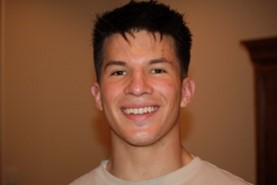
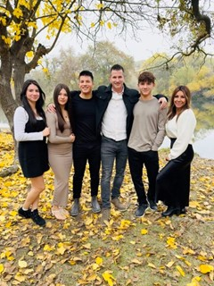

Gideon Murchison
I was born and raised in Clovis, California and I spent most of my life there. After I graduated from high school, I moved to Northern Guatemala to serve a two-year full-time mission for the Church of Jesus Christ of Latter-day Saints. I came home in 2024 and now I live in Rexburg, Idaho, where I'm at Brigham Young University - Idaho
For far, just that high school diploma… but not to worry! I'm a junior in college so next year I'll hopefully have a bachelor's in finance.
I got a lot of goals, and they all fit into the spiritual, social, intellectual, and physical categories. I really enjoy learning languages! I've learned Spanish, K'ek'chi, and French during my mission and time here in college. I'm also a pianist! I've played since I was very little, and I've only kept getting better and better and I'm able to play a lot of pretty tough pieces. I got a lot of things I'm working on hope to continue to become something better and better.

My family is amazing! There's seven of us in our family that started in 2003 when my parents were married, and I was born. David and Olinda met in Peru when my dad went on a trip there to do some solo traveling, which didn't end up being that solo… anyways they've been married for over 22 years now!
There're kids with me being the oldest. My younger brother, Ammon, is only a year or so younger than I. He served a mission in southern Mexico and came home in 2024. My sister Sasha graduated high school in 2025 and started her studies at BYU that fall. She's a pretty sharp girl with a knack for robotics. My younger sister Bella is still in high school and she's lovely. She's kind and is super easy to be friends with. Sam is the youngest, man he's a lot different from what I remember. He's really strong and he's a great wrestler. He's definitely in a very stereotypical boy teen phase but he's a lot of fun still.